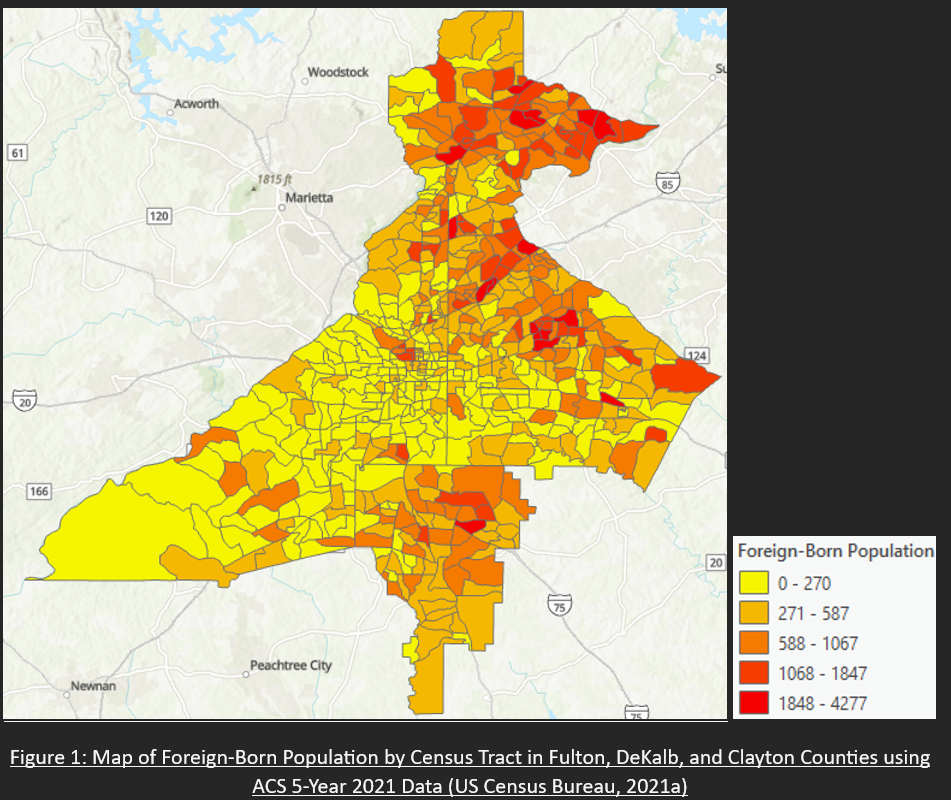

Welcome to my page! I've spent some time documenting my work, my interests, and random things about myself here. I hope you find what your looking for. Please do look around!
Ethnic Restaurant Population Analysis
TLDR: Census and Yelp API data were used along with geospatial analysis techniques in ArcGIS Pro to determine statistical relationships between ethnic restaurant locations and immigrant population prescence in the Atlanta Metro
A staple immigrant grocery store along the Buford Highway Corridor that I went to growing up with my mom and sister
Topics
Geospatial Analysis, ArcGIS Pro, Socioeconomic GIS, Spatial Autocorrelation, OLS Regression, Hot Spot Analysis, Yelp API, US Census, Immigrant, Restaurants
Project Motivation
Ethnic restaurants appear in many areas of the Atlanta Metro Area. These ethnic restaurants play a part in Atlanta being nationally recognized as a city with great food options. Atlanta also, coincidentally (or not), has a sizable immigrant population from many countries. Often, immigrants in America make a living and share their birth nation culture through starting restaurants that serve the foods of their origin nation. Additionally, immigrant populations in America may tend to frequent and generate demand for food from their origin nation in their new locale. A theory that this project explores is that there is a relationship between the physical prescence of immigrant populations and ethnic restaurants in Atlanta. In the future, it would be interesting to think about how investing in immigrants could stimulate ethnic restaurant economic and cultural activity in a region. This project looks to answer three questions. 1. Where are ethnic restaurants located in Atlanta? 2. Where are immigrant populations residing in Atlanta? 3. Is a statistically significant relationship between the population of ethnic restaurants and immigrant population residences in Atlanta? The datasets are shown below

US Census data was pulled for foreign-born populations as shown
The Yelp Fusion API was used to pull all restaurant POIs with ethnic tags
Project Walkthrough
A multitude of analysis techniques were used to answer the project questions. The first question is “Where are ethnic restaurants located in the Atlanta area?” It would be helpful to know which areas of Atlanta have large clusters of ethnics restaurants to answer this question. Therefore, a hotspot analysis using Getis-Ord Gi* is conducted on the ethnic restaurant population by census tract. Inverse distance squared in Euclidean space was chosen for the conceptualization of spatial relationships as a mix between local and regional analysis is desired for the three included countries of the dataset. To answer the second question “Where are immigrant populations residing in the Atlanta area?”, the same analysis method of a hotspot analysis using Getis-Ord Gi* was used except with the ForeignBorn Population dataset from the ACS 2021 5-Year on census tracts. Additionally, to answer these two questions, it would be revealing to see where the mean center of the ethnic restaurants are compared to the mean center of Foreign-Born residents. Both the mean center of the ethnic restaurant points and the mean center of census tracts weighted by Foreign-Born residents were calculated along with their first standard deviation distribution ellipses.

While the hotspot analysis sheds some light on the clustering of immigrants and ethnic restaurants, exploring the spatial autocorrelation of immigrants and ethnic restaurants also reveals if immigrant residences tend to cluster with themselves. A spatial autocorrelation analysis using Moran’s I was performed for immigrant populations and ethnic restaurant populations.
To answer the third question “Is a statistically significant relationship between the population of ethnic restaurants and immigrant population residences in the Atlanta Area?”, an OLS regression analysis is performed. A general OLS regression is performed on census tract geometries with the dependent variable being the population of ethnic restaurants and the explanatory variable being the population of Foreign-Born residents. Having more statistically significant explanatory variables beyond just foreign-born residents would make the regression model more trustworthy for analysis. Since this project is not concerned with the other possible explanatory variables, they are omitted from the model. A more in-depth regression using different ethnic groups of foreign-born residents as explanatory variables is also performed to see if any particular ethnic group has larger influence on the population of ethnic restaurants. The included ethnic groups were European, Asian, African, Oceania, Americas(excluding the US).
Conclusion
This project set out to answer questions on the locations and distribution of ethnic restaurants in the Atlanta area, the locations and distributions of foreign-born populations in the Atlanta area, and the existence of a statistically significant relationship between foreign-born populations and ethnic restaurant populations within census tracts of the Atlanta area. Using spatial autocorrelation, hotspot, and regression methods, the questions have been answered. Generally, the foreign-born populations reside in the northeast of Atlanta. The ethnic restaurants also follow that same locational trend except with a larger presence in the center of Atlanta as well. There does exist a statistically significant relationship between foreign-born populations and ethnic restaurant populations in the Atlanta area, but foreign-born populations are poor predictors of the number of ethnic restaurants in tract resolution locales in the Atlanta area. These findings using socioeconomic GIS methods are confirmed by experiential and qualitative finding of the prescence of foreign-born populations and ethnic restaurants in the Atlanta area as well. The findings are useful to understand the restaurant and diversity spatial layout of the Atlanta area. Such analysis could be applied to other city regions to gain an understanding of the restaurant and diversity layouts. Additionally, the report finding put more credence towards a theory that immigrants do generate more ethnic restaurants for a region. Such restaurant generation can help not only share diverse food cultures to a city, but also generate economic activity and cultural hotspots. The hotspot analysis does show that, in the Atlanta area, that clusters of these restaurants and immigrant populations do exist. When these hotspots are combined with agglomerative theories, such analysis could also inform planning parameters around immigrant residence populations and restaurants for locales in cities.
to get a deeper dive on the results analysis or other details of the project the final project report is included here

I wanted to thank you... for your leadership and dedication to this project... You really shaped this project and implemented a vision for it... I really trusted your work. You elevated this project beyond what would have been possible had we not had you on board.
— City of Atlanta Department of City Planning Supervisor

You did a great job... from coming up to speed quickly on how to best work with our team to completing all tasks efficiently and with a high quality of work. For every task given, especially larger ones, you were good at taking ownership of the project with minimal direction needed.
— East West Manufacturing Supervisor

I am very pleased with your performance, team spirit, self-starter mentality, and leadership. I am very pleased... with your ability to move a project from concept to reality... you have helped get us... strong infrastructure, technical capability, programming
— Center for Sustainable Communities Supervisor